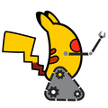
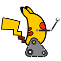

|  |
VSSS-INF
3.0
Brief codes about Very Small Soccer Size
|
|  |
VSSS-INF
3.0
Brief codes about Very Small Soccer Size
|
Variables | |
| usr bin c | std =c++11 -Wfatal-errors -g -m64 -pipe -pthread -lpthread -lopencv_shape -lopencv_stitching -lopencv_objdetect -lopencv_superres -lopencv_videostab -lopencv_calib3d -lopencv_features2d -lopencv_highgui -lopencv_videoio -lopencv_imgcodecs -lopencv_video -lopencv_photo -lopencv_ml -lopencv_imgproc -lopencv_flann -lopencv_core -lboost_thread -lboost_system -lboost_filesystem -g CMakeFiles/P137.dir/src/main.cpp.o CMakeFiles/P137.dir/src/camcap.cpp.o CMakeFiles/P137.dir/src/strategy.cpp.o CMakeFiles/P137.dir/src/robots.cpp.o CMakeFiles/P137.dir/src/aux/jsonSaveManager.cpp.o CMakeFiles/P137.dir/src/aux/kalmanFilter.cpp.o CMakeFiles/P137.dir/src/aux/ls.cpp.o CMakeFiles/P137.dir/src/aux/cpuTimer.cpp.o CMakeFiles/P137.dir/src/communication/serialCom.cpp.o CMakeFiles/P137.dir/src/communication/flyingMessenger.cpp.o CMakeFiles/P137.dir/src/capture/v4lcap.cpp.o CMakeFiles/P137.dir/src/capture/v4ldev.cpp.o CMakeFiles/P137.dir/src/vision/tag.cpp.o CMakeFiles/P137.dir/src/vision/vision.cpp.o CMakeFiles/P137.dir/src/gui/filechooser.cpp.o CMakeFiles/P137.dir/src/gui/controlGUI.cpp.o CMakeFiles/P137.dir/src/gui/testFrame.cpp.o CMakeFiles/P137.dir/src/gui/strategyGUI.cpp.o CMakeFiles/P137.dir/src/gui/visionGUI.cpp.o CMakeFiles/P137.dir/src/gui/robotGUI.cpp.o CMakeFiles/P137.dir/src/gui/imageView.cpp.o CMakeFiles/P137.dir/src/gui/v4linterface.cpp.o CMakeFiles/P137.dir/src/gui/v4linterfaceEvents.cpp.o -o ../P137 -Wl |
| usr bin c | rpath |
| usr bin c std =c++11 -Wfatal-errors -g -m64 -pipe -pthread -lpthread -lopencv_shape -lopencv_stitching -lopencv_objdetect -lopencv_superres -lopencv_videostab -lopencv_calib3d -lopencv_features2d -lopencv_highgui -lopencv_videoio -lopencv_imgcodecs -lopencv_video -lopencv_photo -lopencv_ml -lopencv_imgproc -lopencv_flann -lopencv_core -lboost_thread -lboost_system -lboost_filesystem -g CMakeFiles/P137.dir/src/main.cpp.o CMakeFiles/P137.dir/src/camcap.cpp.o CMakeFiles/P137.dir/src/strategy.cpp.o CMakeFiles/P137.dir/src/robots.cpp.o CMakeFiles/P137.dir/src/aux/jsonSaveManager.cpp.o CMakeFiles/P137.dir/src/aux/kalmanFilter.cpp.o CMakeFiles/P137.dir/src/aux/ls.cpp.o CMakeFiles/P137.dir/src/aux/cpuTimer.cpp.o CMakeFiles/P137.dir/src/communication/serialCom.cpp.o CMakeFiles/P137.dir/src/communication/flyingMessenger.cpp.o CMakeFiles/P137.dir/src/capture/v4lcap.cpp.o CMakeFiles/P137.dir/src/capture/v4ldev.cpp.o CMakeFiles/P137.dir/src/vision/tag.cpp.o CMakeFiles/P137.dir/src/vision/vision.cpp.o CMakeFiles/P137.dir/src/gui/filechooser.cpp.o CMakeFiles/P137.dir/src/gui/controlGUI.cpp.o CMakeFiles/P137.dir/src/gui/testFrame.cpp.o CMakeFiles/P137.dir/src/gui/strategyGUI.cpp.o CMakeFiles/P137.dir/src/gui/visionGUI.cpp.o CMakeFiles/P137.dir/src/gui/robotGUI.cpp.o CMakeFiles/P137.dir/src/gui/imageView.cpp.o CMakeFiles/P137.dir/src/gui/v4linterface.cpp.o CMakeFiles/P137.dir/src/gui/v4linterfaceEvents.cpp.o -o ../P137 -Wl |
 1.8.11
1.8.11